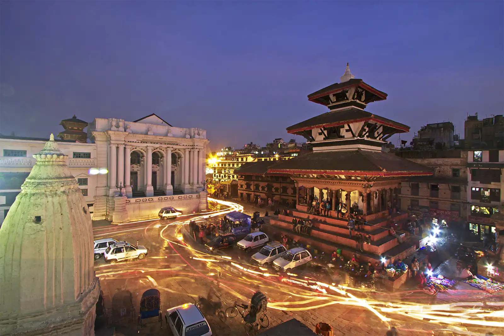

| Image | Name of the temples |
|---|---|
| Kathmandu Durbar Square | |
|  | Kathmandu Durbar Square Night Portrait |

|
Kathmandu Durbar Square Kaal Bhairav Temple |
| Kathmandu Durbar Square Kasthamandap temple | |
| Kathmandu Durbar Square Taleju Bhawani temple | |
| Kathmandu Durbar Square, Goddess Kumari's Residence |